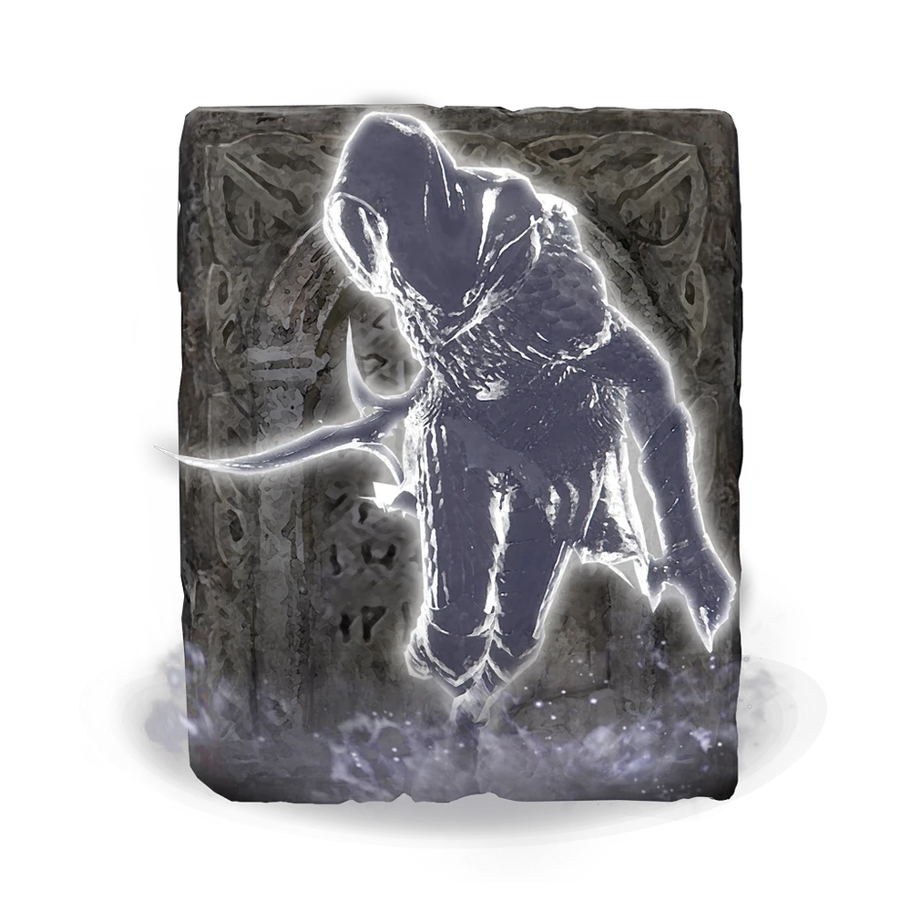

Lobo Espectral: Una de las primeras invocaciones que puede obtener el Sinluz. Tres lobos espectrales que acosan al enemigo desde distintos ángulos, distrayéndolo y facilitando el ataque.

Lobo Espectral
FP: 17
Vida: 283
Tipo: Espíritu
Efecto: Distrae al enemigo desde varios ángulos
Cenizas de Soldajarra: Tres pequeños soldados de barro que se lanzan al combate con una energía y determinación desproporcionadas para su tamaño. Su capacidad para distraer enemigos los convierte en una invocación sorprendentemente útil.

Cenizas de Soldajarra
FP: 14
Vida: 632
Tipo: Espíritu
Efecto: Distrae enemigos por su pequeño tamaño
Caballero Tiche: La sombra de una ágil guerrera que esquiva los ataques enemigos con gran destreza. Una de las invocaciones más valoradas por su movilidad y daño.

Caballero Tiche
FP: 132
Vida: 1406
Tipo: Espíritu
Efecto: Alta movilidad y daño elevado
Deenh, Gavilán Tormentoso: Un halcón espectral que ataca a los enemigos con ráfagas de viento cortante. Su velocidad y movilidad lo convierten en una invocación difícil de ignorar para cualquier rival.

Deenh, Gavilán Tormentoso
FP: 20
Vida: 532
Tipo: Espíritu
Efecto: Ataques de viento cortante a distancia
Lágrima Mimética: La invocación más poderosa de las Tierras Intermedias. Crea una copia exacta del Sinluz, replicando su equipamiento y estilo de combate, convirtiéndose en un aliado devastador.

Lágrima Mimética
FP: 660
Vida: —
Tipo: Espíritu
Efecto: Copia al Sinluz con su equipamiento